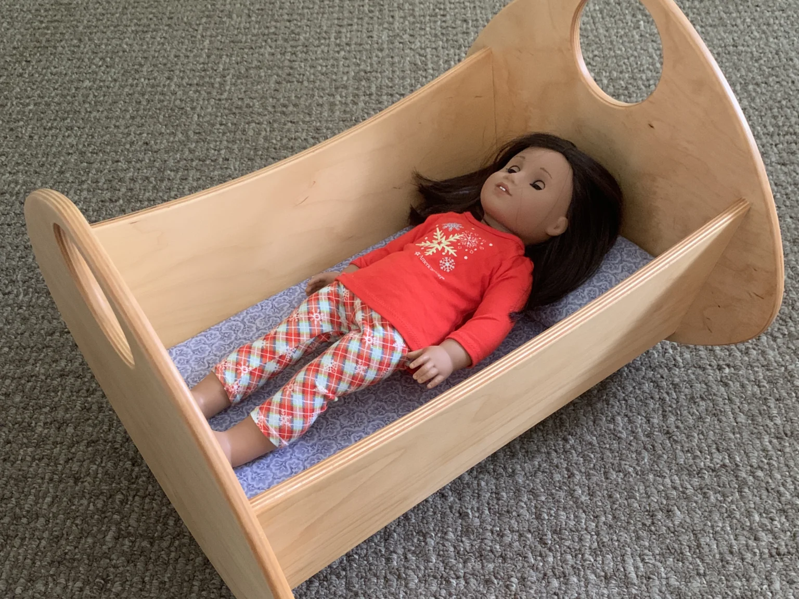
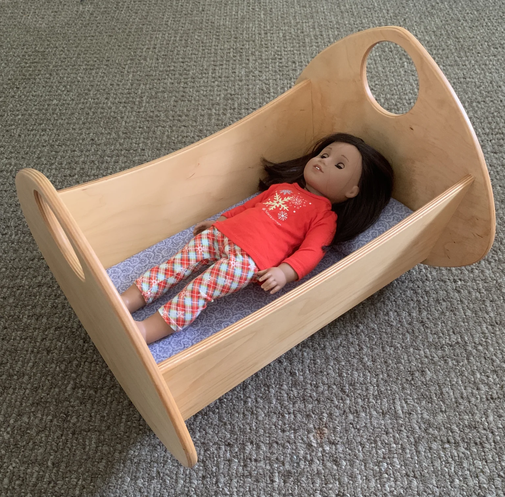
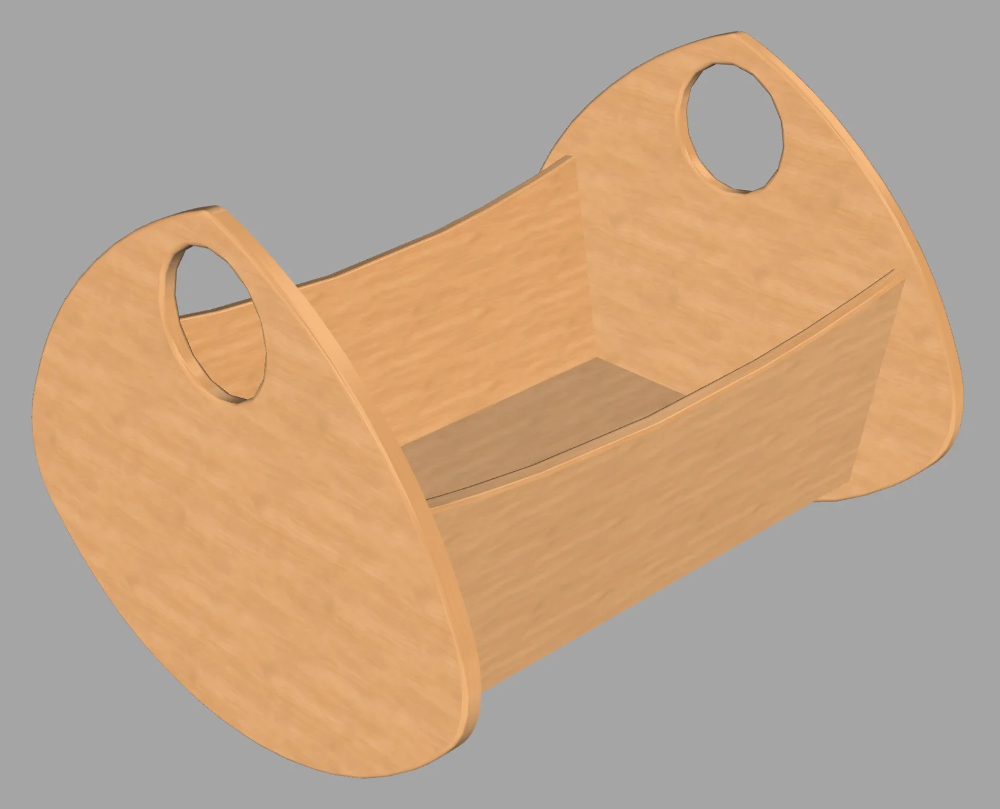
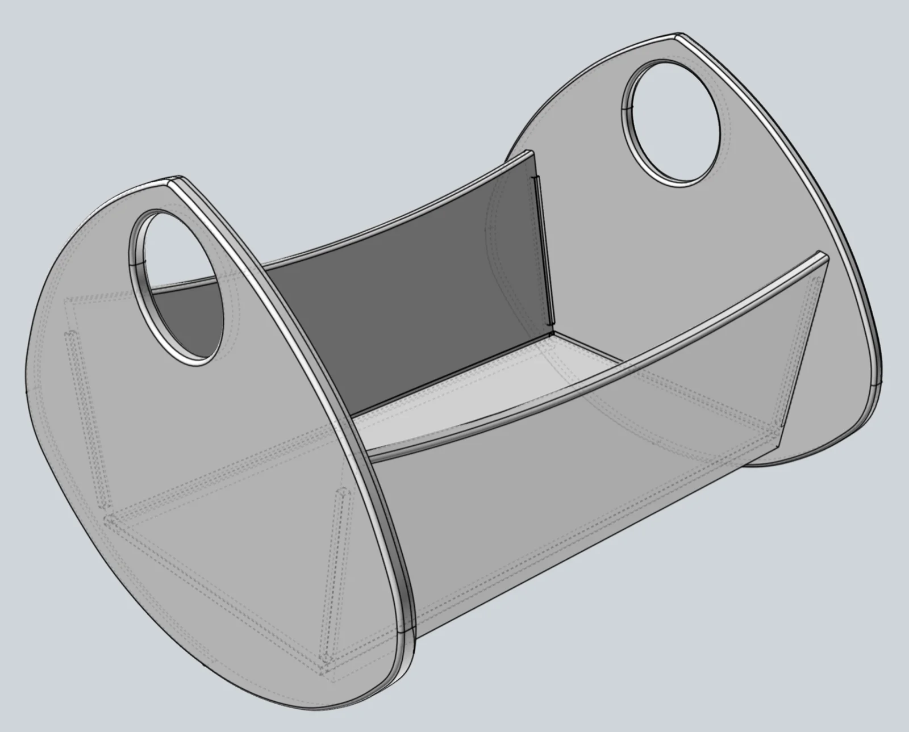
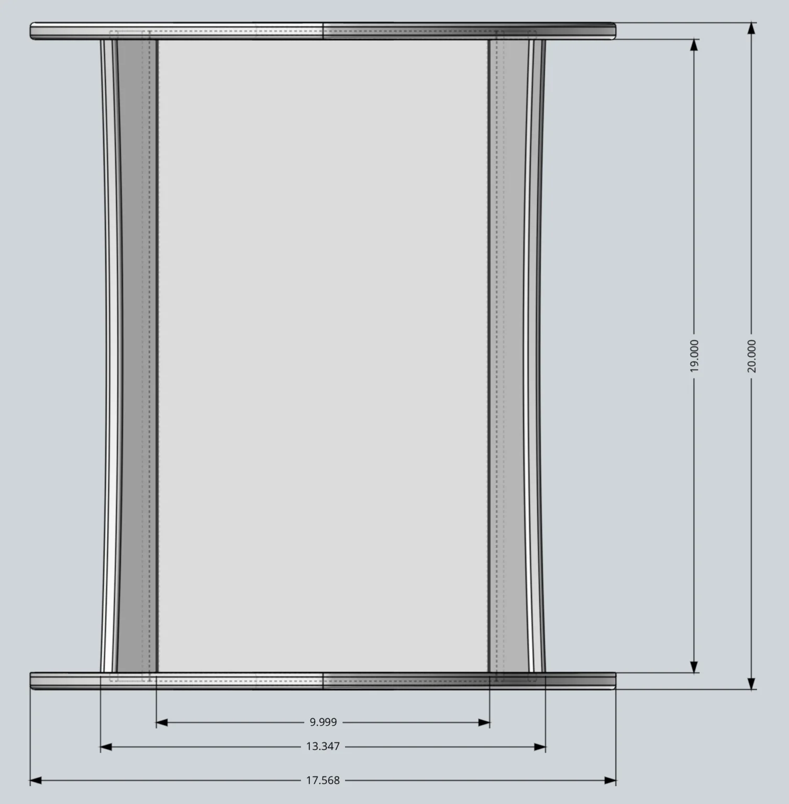
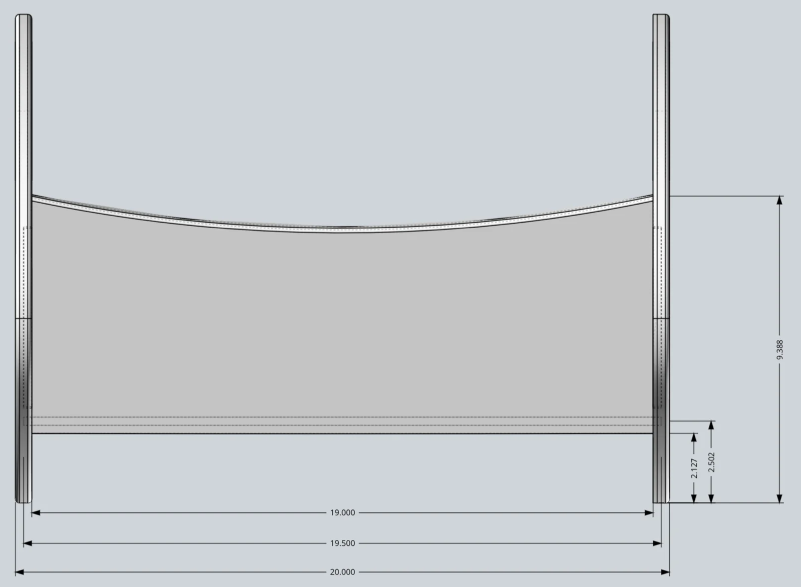
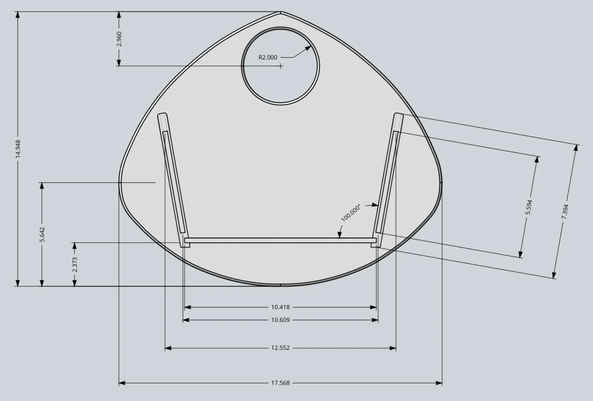
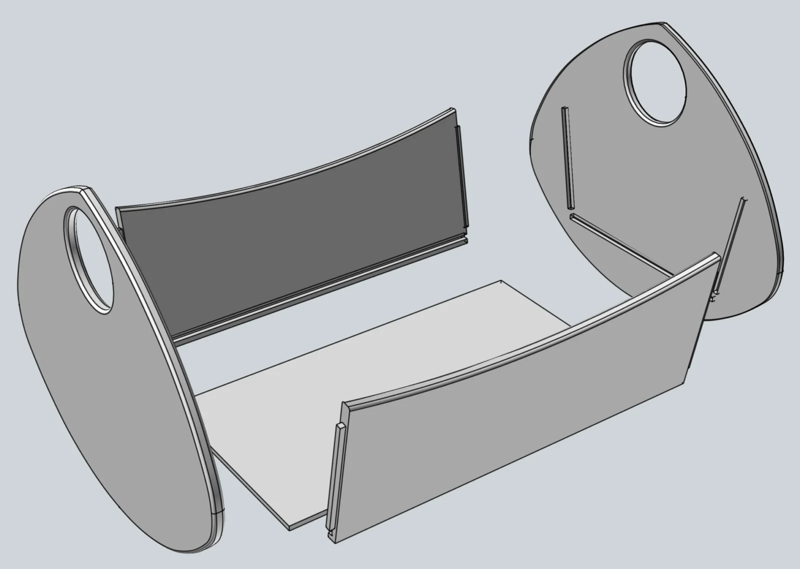

Baby Doll Carriage
Includes STEP and SketchUp formats.
{kind=link}

A baltic birch plywood doll carriage joined with glued dado and tenon joints — no fasteners. Free 3D CAD files available.
I made this doll carriage after noticing how much my grandchildren enjoyed playing with their baby dolls. The carriage is sized to fit most typical sized dolls, but make sure you check your child’s favorite doll’s size to ensure a good fit.
I used 1/2″ thick baltic birch plywood for the ends and sides, and 1/4″ thick baltic birch plywood for the bottom.
Supplies
Materials & Hardware
- 1/2″ baltic birch plywood (ends and sides)
- 1/4″ baltic birch plywood (bottom)
Consumables
- Wiping varnish (3 coats)
- Sandpaper
- Paper (curved-piece templates)
Tools
- Router (edge rounding)
Pulled from the build notes below — quantities weren’t specified in the original write-up.
Construction Notes
Rather than using fasteners, the design relies on joinery — the mating pieces are glued using 1/4″ (nominal) dado cuts. The sides feature 1/4″ thick tenons that insert into the dados cut into the ends.
Tip… Check your plywood thickness and match your dado width accordingly. The advertised size is most likely nominal and not the actual thickness.
For the curved pieces, I print and temporarily glue paper templates onto the material. Then I just follow the template lines to cut out the piece.
I used my router and then sandpaper to round the edges, to minimize any chance of splintering. The finished carriage received three coats of wiping varnish for a child-safe finish.
Image Gallery






